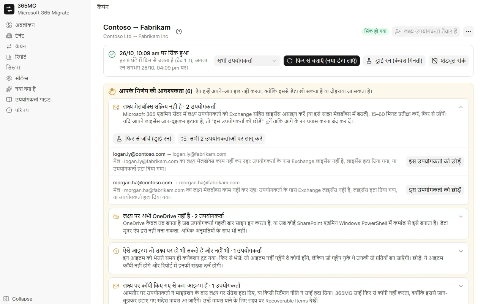

Microsoft 365 और Google Workspace
कितने भी Microsoft 365 टेनेंट और Google Workspace खाते कनेक्ट करें, फिर किसी भी दिशा में कॉपी करें: Microsoft ↔ Google, Microsoft → Microsoft, Google → Google।
Microsoft 365 ↔ Google Workspace माइग्रेशन
365MG आपके अपने Windows PC से Microsoft 365 और Google Workspace के बीच किसी भी दिशा में मेल, संपर्क, कैलेंडर, OneDrive और Google Drive, शेयर की गई ड्राइव और समूह कॉपी करता है। यह हर आइटम का जर्नल रखता है, बिना डुप्लिकेट के फिर से चलता है, और जब भी किसी विकल्प से डेटा खो या दोहरा सकता है, तो रुककर आपसे पूछता है।

कितने भी Microsoft 365 टेनेंट और Google Workspace खाते कनेक्ट करें, फिर किसी भी दिशा में कॉपी करें: Microsoft ↔ Google, Microsoft → Microsoft, Google → Google।
फ़िल्टर से स्रोत उपयोगकर्ता चुनें, उनका लक्ष्य उपयोगकर्ताओं से स्वचालित मिलान करें, बल्क में लक्ष्य डोमेन और लाइसेंस असाइन करें, और जो उपयोगकर्ता नहीं हैं उन्हें बनाएँ।
Exchange मेलबॉक्स API के ज़रिए हर आइटम को फ़ोल्डर-दर-फ़ोल्डर निर्यात और इम्पोर्ट करता है, हर आइटम के जर्नल के साथ, ताकि रुका हुआ रन वहीं से आगे बढ़े जहाँ रुका था।
फ़ाइलें और फ़ोल्डर कॉपी करता है, बनाने और बदलने की तिथियाँ बनाए रखता है, हर फ़ाइल को quickXorHash से सत्यापित करता है और बड़ी फ़ाइलों को फिर से शुरू किए जा सकने वाले 64 MB भागों में डाउनलोड करता है।
वितरण सूचियों और मेल-सक्षम समूहों को उसी उपनाम, सदस्यों और स्वामियों के साथ Microsoft 365 समूहों के रूप में फिर से बनाता है।
उपयोगकर्ताओं को वेव में बाँटें, कुछ भी लिखे बिना गिनें कि रन क्या कॉपी करेगा, फिर वास्तविक कॉपी करें और कटओवर तक शेड्यूल पर सिंक करते रहें।
अनुपलब्ध लक्ष्य मेलबॉक्स या OneDrive, फिर से बनाए गए उपयोगकर्ता, अज्ञात परिणाम वाले आइटम: हर एक "आपके निर्णय की आवश्यकता" सूची में आता है, उसे सुलझाने वाली कार्रवाइयों के साथ।
प्रति उपयोगकर्ता और कुल मिलाकर स्रोत बनाम कॉपी किया गया, ध्यान देने योग्य उपयोगकर्ता, समूह और टिप्पणियाँ; एक स्व-निहित HTML पेज या CSV निर्यात करें।
English, Tiếng Việt, 简体中文, 한국어, 日本語, Deutsch, Русский, हिन्दी और العربية (दाएँ से बाएँ)।
हर सुरक्षा उपाय उस चीज़ से आया है जो 350 उपयोगकर्ताओं वाली एक कंपनी को ले जाते समय गलत हुई: बीच में लाइसेंस खो देने वाले मेलबॉक्स, ऐसे OneDrive जो अभी बने ही नहीं थे, भेजते समय टूटने वाले कनेक्शन।

365MG इसके लेखक द्वारा वितरित किया जाता है। इंस्टॉलर, डेमो या माइग्रेशन में मदद के लिए लिखें।